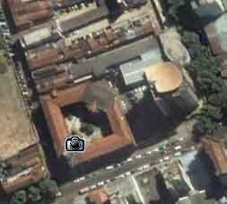

Por ser de uso gratuito, o Google Earth vem sendo muito explorado em nossos trabalhos, sejam investigativos sejam operacionais. Com ele, podemos compensar a falta de estrutura da Polícia e analisar áreas com incidência de determinados crimes, e muitas outras coisas.
Para se ter idéia, todas as operações policiais levadas a efeito pela CORE (Coordenadoria de Recursos Especiais) da Polícia Civil são previamente estudadas, e com o cruzamento dos arquivos e das imagens aéreas captadas com o programa da Google, podemos imprimir um grande mapa onde relacionamos possíveis locais onde encontram-se depósitos de armamentos, bocas-de-fumo ou áreas de contenção, os pontos onde “soldados” do tráfico permanecem fortemente armados para impedir a entrada da Polícia e de facções rivais na favela que dominam.
O novo satélite, chamado de “WorldView I”, junto ao que permitiu as imagens já existentes, o “Quickbird”, permitirá a coleta de imagens com resolução de meio metro, em mais de 600 mil quilômetros quadrados de imagens por dia, enquanto apenas com o Quickbird em órbita esse mesmo volume demora uma semana para ser alcançado (na foto ao lado um exemplo de imagem do Google Earth. O prédio mais alto é o da Chefia de Polícia Civil/RJ).O lançamento do satélite poderá ser acompanhado pela internet através deste endereço, e ainda há planos para que novo equipamento seja lançado no fim do ano que vem.
O Google Earth conta com recursos extras, mas aí somente na versão paga, tornando-se proibitivo mesmo para o mais dedicado policial. O Governo nada faz pela segurança pública, mas o Google é nosso amigo. Se você ainda não usa, faça o download do Google Earth e veja como pode ser útil. E onde você policial trabalha, utilizam também o excelente serviço do Google Earth?